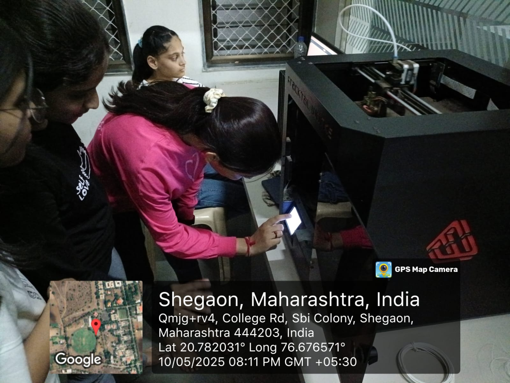
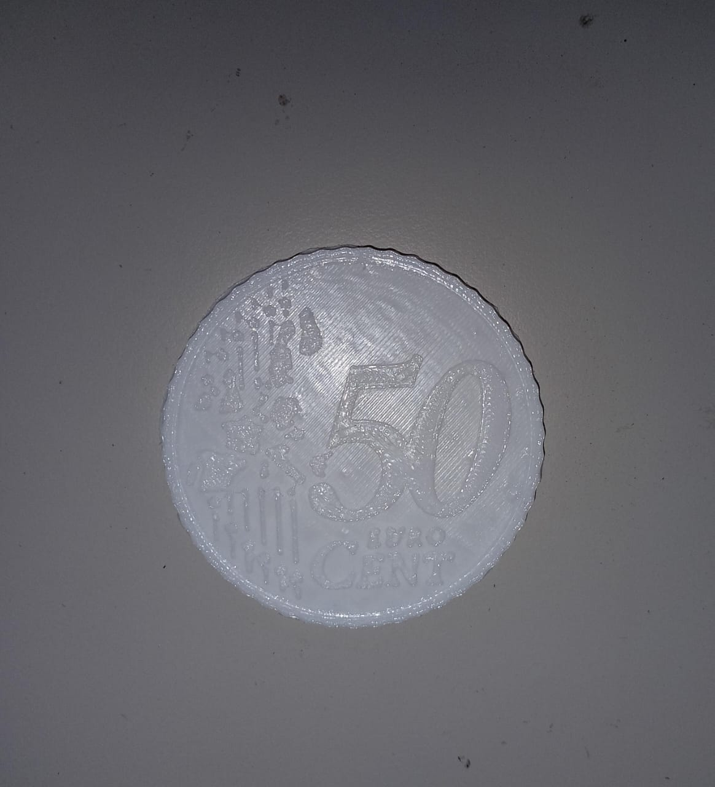

Discover the concept of 3D printing—additive manufacturing that builds objects layer by layer.
Hands-on Experience:
Watched a live FDM printer demo to observe movement and extrusion.
Explored core hardware: frame, heated bed, extruder, nozzle, filament path, stepper motors and control board.
Key Takeaways:
A clear mental model of how a 3D printer works and why FDM technology is the ideal starting point for beginners.
Day 2: Materials & Safety

Focus:
Understand the “ink” of 3D printing—filaments—and how to handle the machine safely.
Hands-on Experience:
Compared PLA, ABS, PETG and flexible TPU for strength, finish and ease of printing.
Tried different bed-adhesion methods: tape, glue stick, build-plate coatings.
Discussed ventilation needs and safe handling of hot nozzles and moving parts.
Key Takeaways:
Ability to choose the right filament for a job and follow essential safety protocols.
Day 3: Introduction to CAD & STL Files
Focus:
From imagination to a printable 3D file.
Hands-on Experience:
Created simple shapes in TinkerCAD; peeked at Fusion360 and Blender for advanced users.
Learned why the STL format is the universal language of 3D printers.
Downloaded ready-to-print models from Thingiverse and Printables.
Key Takeaways:
Confidence to either design from scratch or source free designs and prepare them as STL files.
Day 4: Slicing Software
Focus:
Convert digital geometry into printer instructions.
Hands-on Experience:
Installed Ultimaker Cura and explored preview mode.
Tuned critical parameters: layer height, infill %, supports, print speed, nozzle & bed temperatures.
Watched the slicer generate G-code toolpaths.
Key Takeaways:
Understanding how slicing controls print speed, strength and quality, and the ability to fine-tune settings before every print.
Day 5: First Print & Calibration

Focus:
Prepare the printer and run the first real job.
Hands-on Experience:
Performed manual bed-levelling and nozzle-gap adjustment.
Printed a calibration cube and the famous Benchy boat to benchmark quality.
Noted common early issues—warping, stringing, under-extrusion.
Key Takeaways:
Practical skill in printer setup and first-print calibration, plus an eye for spotting problems as they arise.
Day 6: Troubleshooting & Print Quality
Focus:
Refine printing techniques and master problem-solving.
Hands-on Experience:
Fixed real print issues:
– Bed adhesion failures → adjusted bed temperature and levelling.
– Stringing → enabled retraction and tuned nozzle temperature.
– Layer shifting → tightened belts and checked stability.
Experimented with speed, infill and support settings to improve finish.
Key Takeaways:
A structured approach to diagnosing and correcting print defects, and deeper understanding of slicer parameters.
Day 7: Post-Processing & Advanced Learning
Focus:
Give prints a professional look and peek into next-gen 3D printing.
Hands-on Experience:
Sanded and painted PLA parts; learned acetone smoothing for ABS.
Discussed exotic filaments (wood-fill, carbon-fiber, flexible TPU).
Previewed multi-material and resin-based (SLA/DLP) printers.
Printed a useful personal object such as a phone stand or custom keychain.
Key Takeaways:
Skills in post-processing, awareness of advanced materials and the confidence to plan a print from concept to finished, polished object.